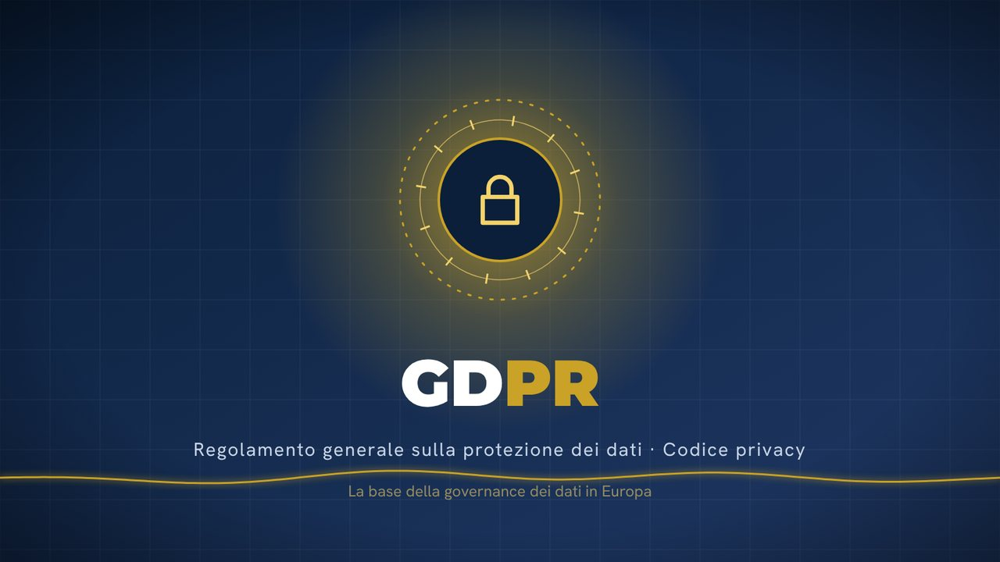

ARG
ARGARGOS › La normativa in 4 minuti › GDPR
GDPR in 4 minuti: Si sanziona soprattutto l'essenziale
Il GDPR è la base di tutta la governance dei dati in Europa. Dichiararsi conformi non basta. Bisogna poterlo dimostrare. Si sanziona soprattutto l'essenziale.

- 0:00Piccoli errori
- 0:12Le sanzioni
- 0:25Cosa si sanziona
- 0:41GDPR
- 0:50Cosa chiede
- 1:12Omnibus digitale
- 1:34Date
- 1:54La catena
- 2:12In Italia
- 2:29Cosa fare
Dati chiave
- 20 M€ o il 4 % del fatturato mondiale
- 25.5.2018 il GDPR si applica
- 1.1.2026 regolamento procedurale (UE) 2025/2518 in vigore
- 2.4.2027 si applica ai nuovi casi transfrontalieri
- Fine 2027 semplificazione completata
- Senza base giuridica Trattamenti senza base chiara
- Registro irreale Non riflette la realtà
- Conservazione Dati tenuti troppo a lungo
Trascrizione
Testo completo della voce narrante
0:00 · Piccoli errori
Una e-mail al destinatario sbagliato. Un backup che nessuno ha cancellato. Dati fuori dall'Europa. Sviste in apparenza innocue. Finché arriva il reclamo.
0:12 · Le sanzioni
Il GDPR si applica dal 2018, con sanzioni fino a venti milioni di euro o al quattro per cento del fatturato mondiale. In Italia lo completa il Codice privacy. E a vigilare è il Garante.
0:25 · Cosa si sanziona
Si sanziona soprattutto l'essenziale. Trattamenti senza una base giuridica chiara. Un registro che non riflette la realtà. Dati conservati troppo a lungo. Responsabili esterni senza controllo. E sicurezza solo sulla carta.
0:41 · GDPR
Il GDPR è la base di tutta la governance dei dati in Europa. Dichiararsi conformi non basta. Bisogna poterlo dimostrare.
0:50 · Cosa chiede
Cosa chiede oggi. Una base giuridica e trasparenza per ogni trattamento. Un registro e, se il rischio è alto, una valutazione d'impatto. Privacy fin dalla progettazione, e un contratto con ogni responsabile. E notificare le violazioni entro 72 ore. I trasferimenti fuori dallo SEE, sempre con garanzie.
1:12 · Omnibus digitale
E cosa arriva: l'Omnibus digitale, ancora in negoziazione. Toccherebbe la nozione di dato personale, ma il Consiglio frena. Riconoscerebbe il legittimo interesse per l'IA. E solo le violazioni ad alto rischio andrebbero notificate, entro 96 ore. Ma non è legge: oggi si applica il GDPR così com'è.
1:34 · Date
Le date chiave. 25 maggio 2018: il GDPR si applica. 1° gennaio 2026: entra in vigore il nuovo regolamento procedurale. 2 aprile 2027: si applica ai nuovi casi transfrontalieri. E fine 2027: la semplificazione completata.
1:54 · La catena
Ogni anello ha il suo ruolo. Il produttore: privacy fin dalla progettazione. Il distributore: i contratti di assistenza. L'integratore: misure e sub-responsabili. E il cliente finale: basi giuridiche, registro e valutazioni d'impatto.
2:12 · In Italia
In Italia vigila il Garante per la protezione dei dati personali. Il Codice privacy adegua il GDPR al diritto italiano. Il Garante è stato tra i primi in Europa ad agire sull'intelligenza artificiale generativa. E vigila anche sui dati personali nel Data Act.
2:29 · Cosa fare
Cosa fare adesso. Rispettare il GDPR attuale, gestire le violazioni e mettere in sicurezza l'addestramento dell'IA. ARGOS lo dimostra, invece di dichiararlo: un registro reale, valutazioni d'impatto e una prova per ogni misura. GDPR: essere conformi è poterlo dimostrare.
Domande frequenti
Che cos’è GDPR?
Il GDPR è la base di tutta la governance dei dati in Europa. Dichiararsi conformi non basta. Bisogna poterlo dimostrare. Il GDPR si applica dal 2018, con sanzioni fino a venti milioni di euro o al quattro per cento del fatturato mondiale. In Italia lo completa il Codice privacy. E a vigilare è il Garante.
Che cosa richiede GDPR?
Cosa chiede oggi. Una base giuridica e trasparenza per ogni trattamento. Un registro e, se il rischio è alto, una valutazione d'impatto. Privacy fin dalla progettazione, e un contratto con ogni responsabile. E notificare le violazioni entro 72 ore. I trasferimenti fuori dallo SEE, sempre con garanzie.
Quali sono le date chiave?
Le date chiave. 25 maggio 2018: il GDPR si applica. 1° gennaio 2026: entra in vigore il nuovo regolamento procedurale. 2 aprile 2027: si applica ai nuovi casi transfrontalieri. E fine 2027: la semplificazione completata.
Qual è la situazione in Italia?
Si sanziona soprattutto l'essenziale. Trattamenti senza una base giuridica chiara. Un registro che non riflette la realtà. Dati conservati troppo a lungo. Responsabili esterni senza controllo. E sicurezza solo sulla carta. In Italia vigila il Garante per la protezione dei dati personali. Il Codice privacy adegua il GDPR al diritto italiano. Il Garante è stato tra i primi in Europa ad agire sull'intelligenza artificiale generativa. E vigila anche sui dati personali nel Data Act.
Che cosa deve fare un’impresa adesso?
Cosa fare adesso. Rispettare il GDPR attuale, gestire le violazioni e mettere in sicurezza l'addestramento dell'IA. ARGOS lo dimostra, invece di dichiararlo: un registro reale, valutazioni d'impatto e una prova per ogni misura. GDPR: essere conformi è poterlo dimostrare.
Fonti ufficiali
- Regolamento (UE) 2016/679 (GDPR) (EUR-Lex)
- Garante per la protezione dei dati personali
- Schede normative di Software in a Box
Continua con
 EHDS
EHDSEHDS in 4 minuti: Per ospedali e produttori
 Regolamento sull'IA
Regolamento sull'IARegolamento sull'IA in 4 minuti: Italia: regolamento più legge nazionale
 NIS2
NIS2NIS2 in 4 minuti: Italia: legge applicata per fasi
Voce e musica generate con intelligenza artificiale (art. 50 del regolamento sull’IA). Informazione generale, non costituisce consulenza legale; situazione a novembre 2026, secondo le schede normative di Software in a Box. Clip video su licenza Envato.
Per inserire questa presentazione in un altro sito: <iframe src="https://argos.softwareinabox.eu/it/normativa/gdpr/presentacion/?embed=1" width="960" height="540" allow="autoplay; fullscreen" title="GDPR in 4 minuti: Si sanziona soprattutto l'essenziale"></iframe> con un link a questa pagina.
Disponibile anche in: EspañolDeutschFrançaisFrançais (Belgique)NederlandsNederlands (België)PortuguêsDansk